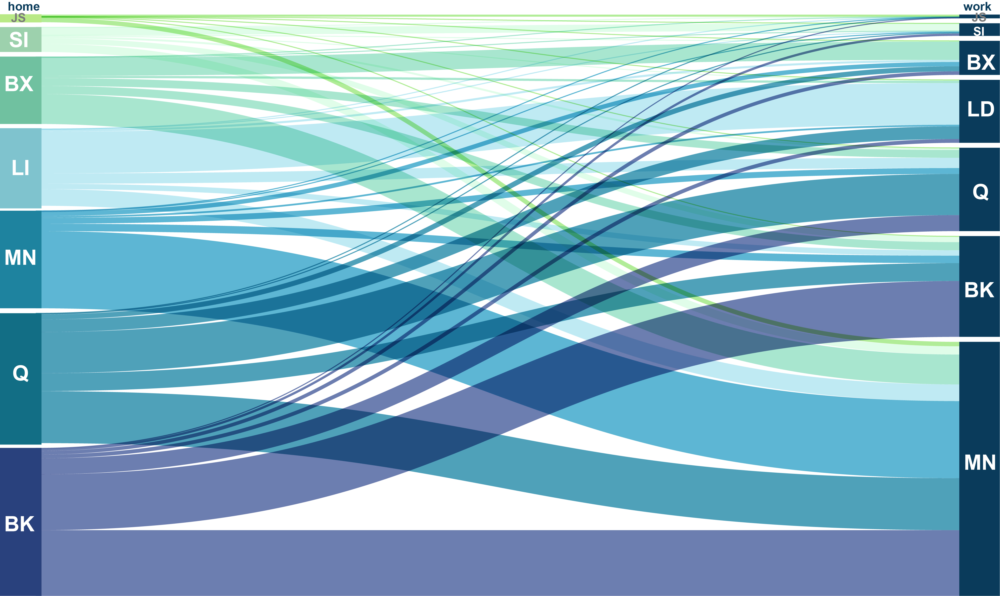
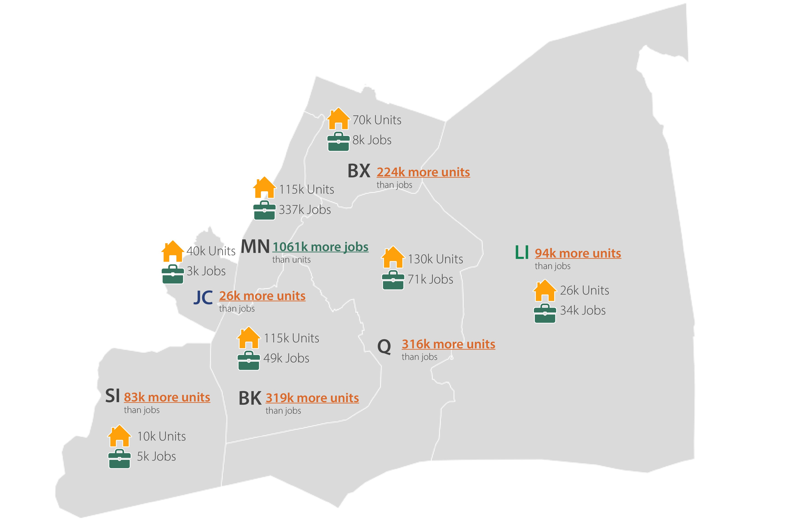

Commute Pattern
1. Communication Ties in NYC Metro Region
The integration and expansion of the commuter rail system since the early 20th century have not only spurred suburban growth but also woven the economic prosperity of New York City into the fabric of housing development and population expansion in its neighboring regions. The housing market vital to New York City extends well beyond the confines of the city itself, fostering a dynamic exchange of residents with the suburbs. Remarkably, a significant 20% of the city’s workforce resides outside its urban borders.
2021 NYC Metro Region Commute Ties Between Boroughs/Counties
Commute Population Table
Code
import pandas as pd
from IPython.display import display, HTML
commute_df = pd.read_csv('Data/LODES/COMMUTE_COUNTY_2021.csv')
# Set the maximum number of rows to be displayed per page
max_rows_per_page = 10 # Set the desired number of rows per page
pd.set_option('display.max_rows', max_rows_per_page)
# Display the DataFrame with a vertical scroll bar
with pd.option_context('display.max_rows', max_rows_per_page):
display(commute_df)| w_countyfp | h_countyfp | S000 | home_county_name | work_county_name | |
|---|---|---|---|---|---|
| 0 | 5 | 5 | 113958 | Bronx | Bronx |
| 1 | 5 | 47 | 25413 | Brooklyn | Bronx |
| 2 | 5 | 59 | 14933 | Long Island | Bronx |
| 3 | 5 | 61 | 28989 | Manhattan | Bronx |
| 4 | 5 | 81 | 34362 | Queens | Bronx |
| ... | ... | ... | ... | ... | ... |
| 38 | 85 | 47 | 15465 | Brooklyn | Staten Island |
| 39 | 85 | 59 | 4552 | Long Island | Staten Island |
| 40 | 85 | 61 | 3566 | Manhattan | Staten Island |
| 41 | 85 | 81 | 6867 | Queens | Staten Island |
| 42 | 85 | 85 | 45744 | Staten Island | Staten Island |
43 rows × 5 columns
Manhattan is one of the most densely populated employment centers, supported by various transportation infrastructures. Nearly 15% of workers commute long distances daily from locations such as Long Island, Jersey City, and Staten Island. Residents from Brooklyn and Queens constitute the largest proportion of the commuting population in New York City.
2. Job-Home Balance

Within the greater NYC metro area, the equilibrium between housing and employment underwent substantial shifts from 2019 to 2021, notably pronounced in Manhattan. Here, there are 1,061,000 more jobs than housing units. This disparity is particularly evident in the boroughs adjacent to the East River in New York City—Queens, Brooklyn, and the Bronx. Here, housing expansion has significantly outpaced employment growth, signaling a rising trend of residents seeking employment in other regions, chiefly within New York, impacting cross-East River commuting.
Recent shifts in the balance of housing and employment opportunities, coupled with alterations in commuting patterns, have exacerbated pressures on the transportation network. The evolving landscape underscores the critical role of transit infrastructure in the region. Encouraging employment opportunities and housing development beyond Manhattan, Brooklyn, and Queens holds potential to relieve strain on transportation networks while enhancing employment prospects in other regional areas.